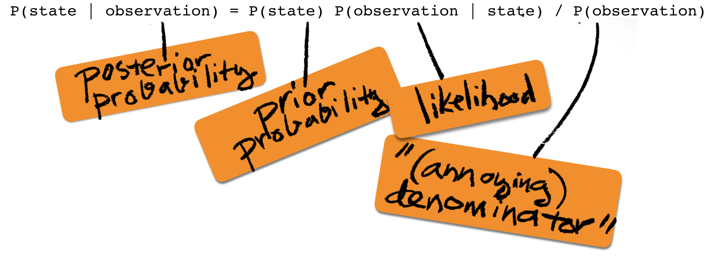
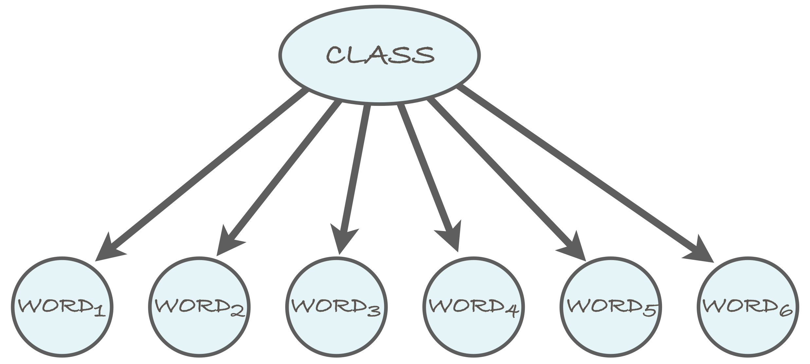

Probabilistic inference
| Theme | Objectives (after the course, you ...) |
| Reasoning under uncertainty |
|
Reasoning under Uncertainty
In this section, we'll study methods that can cope with uncertainty. The history of AI has seen various competing approaches to handling uncertain and imprecise information: fuzzy logic, non-monotonic logic, the theory of plausible reasoning et cetera. In most cases, probability theory has turned out to be the most principled and consistent paradigm for reasoning under uncertainty.
If you want an objective and diplomatic view on the matter, don't ask me. I'll just repeat a counter-argument made by a proponent of fuzzy logic when he tried to get around a rigorous formal proof showing that any method of inference where degrees of plausibility are represented as real numbers, other than probability theory, is inconsistent: the response of the fuzzy logic proponent was that since the proof is based on ordinary (two-valued) logic, it doesn't apply to fuzzy logic. Now that is a counter-argument that is hard to refute!
Probability Fundamentals
We are working to add material about the basic concepts of probability theory: probabilistic model, events, joint probability, conditional probability, etc.
Since this section is not finished yet, feel free to refresh these concepts from your favorite source. Two great examples are:
- Ian Goodfellow, Yoshua Bengio & Aaron Courville: Deep Learning (Section 3)
- Larry Wasserman: All of Statistics (Part I, Probability is great)
- Wikipedia: Bayes theorem (Section Drug testing)
- Youtube: Maths Doctor, A Level Statistics 1.5 Bayes' Theorem and medical testing
- Better Explained: Understanding Bayes Theorem with Ratios
The lecturer has two dice in his office (true story). One of them is an ordinary die and will yield any result from one to six with equal probability. However, the other die is loaded (true story, again). It will yield a six with probability 1/2 and any other outcome with probability 1/10. He will roll the ordinary die first, and then the loaded one. Calculate the following probabilities. Recall that P(A|B) means the conditional probability of A given B.
- P("both outcomes are 6")
- P("neither outcome is 6")
- P("the sum of the outcomes equals 9")
- P("the sum of the outcomes equals 9" | "at least one outcome is 6")
- P("at least one outcome is 6" | "the sum of the outcomes equals 9")
Hint: We know that probability calculus can be confusing, but keep calm and carry on, you'll get the hang of it!
- Because the outcomes are independent, we can use the product rule to
obtain
P("both outcomes are 6") = P("first outcome is 6") × P("second outcome is 6")
= 1/6 × 1/2 = 1/12 ≈ 0.083
-
P("neither outcome is 6") = P("first is not 6") × P("second is not 6") = 5/6 × 1/2 = 5/12 ≈ 0.417
-
Let's denote the result of the two dice with the pair (m,n), where m is the
outcome of the first (fair) die, and n is the outcome of the second (loaded) die.
Together the outcomes define the elementary event. The sum equals nine in the
following elementary events: (3,6), (4,5), (5,4), (6,3). Note that the results
(3,6) and (6,3) are distinct elementary events.
The result is obtained by summing up the probabilities of the aforementioned elementary events:
P((3,6)) + P((4,5)) + P((5,4)) + P((6,3)) = 1/6 × 1/2 + 1/6 × 1/10 + 1/6 × 1/10 + 1/6 × 1/10 = 8/60 ≈ 0.133.
-
Denote by A the event "the sum of the outcomes equals 9", and by B the event
"at least one outcome is 6". Since the conditional probability is given by
P(A | B) = P(A, B) / P(B), we start by calculating P(A, B) and
P(B).
The elementary events where both A and B occur are (3,6) and (6,3). Thus, P(A,B) = 1/6 × 1/2 + 1/6 × 1/10 = 6/60. Event B, on the other hand, is the complement of event "neither outcome is 6" from item 2 above, so we can get its probability easiest by applying the rule P(B) = 1 – P(¬B), to get P(B) = 1 – 5/12 = 7/12.
Thus we get the conditional probability by substituting into the formula P(A | B) = P(A, B) / P(B) = 6/60 / (7/12) = 6/35 ≈ 0.171.
- With the notation of the previous item, we get P(B | A) = P(A, B) / P(A) = 6/60 / (8/60) = 6/8 ≈ 0.75, where P(A) = 8/60 was calculated in item 3 above.
Let's use the same dice as in the previous exercise.
- What is the distribution of the sum of the outcomes when rolling the ordinary die twice?
- What is the distribution of the sum of the outcomes when rolling the loaded die twice?
- Assume that either die (ordinary or loaded) is selected
at random with probability 1/2 each. The selected die is
rolled twice. Calculate the probability
P("the die is loaded" | "the sum of the outcomes is 10")
Calculate the probability that the die is ordinary as well to make sure that the sum of the two probabilities equals one. - Again, either die is selected with equal probability.
We notice that every time the die is rolled, the outcome is six.
After how many rolls can we be at least 99% sure that the
die is loaded?
Hint: Calculate the ratio of the posterior probabilities of each die after k rolls. If the posterior probability of the loaded die is over 99%, then the ratio of the posterior probabilities is over 0.99/0.01 = 99.
If you have trouble with these exercises, you may wish to study additional material on the Bayes rule. Good pointers are provided above.
-
The "distribution of the outcomes" means a list of probabilities for
each possible outcome (here: sums of the two dice). The sum can take
any value between 2, ..., 12. With a fair die, each elementary event
(m,n) has probability 1/6 × 1/6 = 1/36, so the distribution is
obtained by counting how many elementary events correspond to each
possible sum and multiplying this by 1/36.
[P("sum is 2"), ..., P("sum is 12")] = [1/36, 2/36, 3/36, 4/36, 5/36, 6/36, 5/36, 4/36, 3/36, 2/46, 1/36]
-
With the loaded die, the elementary events have different
probabilities, so a simple counting and multiplication won't do.
Every event (m,n) where m<6 and n<6 has probability 1/10 ×
1/10 = 1/100. Every event (m,n) where m<6 and n=6, or m=6 and n<6,
has probability 1/10 × 1/2 = 1/20. And finally, the event
(6,6) has probability 1/2 × 1/2 = 1/4.
We now get, for example, the probability that the sum is 9 from
P((3,6)) + P((4,5)) + P((5,4)) + P((6,3)) = 1/20 + 1/100 + 1/100 + 1/20 = 12/100 = 0.12
The complete distribution is given by
[P("sum is 2"), ..., P("sum is 12")]
= [1/100, 2/100, 3/100, 4/100, 5/100, 14/100, 13/100, 12/100, 11/100, 10/100, 25/100]
To make sure we haven't messed up (who, me?), we can sum up the probabilities to check that the total is 1.0; i.e., 1+2+3+4+5+14+13+12+11+10+25=100. Yes!
-
Here we can apply the Bayes formula:
P("loaded die" | "the sum is 10") P("the sum is 10" | "loaded die") × P("loaded die") = --------------------------------------------------- P("the sum is 10")The first term in the numerator was calculated in the previous item, and the other term is known to be 1/2 by assumption. However, we'll have to calculate the annoying denominator by splitting it into two alternative ways to get the sum 10.
P("sum is 10" | "fair die") × P("fair die") + P("sum is 10" | "loaded die") × P("loaded die")
= 3/36 × 1/2 + 11/100 × 1/2 = 29/300 ≈ 0.0966.
In case you have difficulty following these calculations, please take a look at the additional material on Bayes rule above. Note that the numerical values of both of the conditional probabilities in the above expression come from the two distributions we calculated in items 1 & 2.
Substituting these values into the Bayes rule we get
P("loaded die" | "sum is 10") = 11/100 × 1/2 / (29/300) = 33/58 ≈ 0.5689.
When calculating the conditional probability P("fair die" | "sum is 10") by the Bayes rule, we'll end up with the very same denominator, whose value we already calculated to be 29/300, and thus we get:
P("fair die" | "sum is 10") = 3/36 × 1/2 / (29/300) = 25/58.
The sum of the probabilities of the loaded and the fair die is 33/58 + 25/58 = 1 as it should!
Note: The end result of the above calculation is that observing that the sum is 10 has almost no effect on our belief about which die was chosen: before the observation, our prior probability for the loaded die was 0.5, and after the observation, our posterior probability is 0.5689. You can think about what outcome would have changed our belief the most.
-
Following the hint, it'll be enough to check whether
P("loaded die" | "k times 6") ----------------------------- > 99 P("fair die" | "k times 6")The posterior probability ratio can be obtained by applying the Bayes rule to both of the conditional probabilities above:
P("k times 6" | "loaded die") × P("loaded die") ----------------------------------------------- P("k times 6") -------------------------------------------------- P("k times 6" | "fair die") × P("fair die") ------------------------------------------- P("k times 6")where the annoying denominator cancels. Since the prior probabilities are the same (0.5), they too cancel (which doesn't happen in general). What is left is the ratio of the likelihood terms:
P("k times 6" | "loaded die") / P("k times 6" | "fair die") = (1/2)k / (1/6)k = 3k.
The smallest k for which 3k > 99 is k=5. Thus, five rolls are required until the posterior probability of the loaded die is greater than 99%.
Probabilistic Inference
Now that the probability basics are in place, we will see how they are used for inference in AI problems.
Bayes rule and probabilistic inference
Bayes rule has a central role in statistical inference and machine learning. The basis for this is that it can be applied in scenarios where one of the random variables in the model corresponds to an unknown "state" which we are interested to learn. If the model includes other variables that correspond to "observations" that can be made and that are dependent on the unknown state, we can use the Bayes rule as follows

The left side of the equation is called the posterior probability (probability after the observation). The first factor on the right is called the prior probability (probability prior to the observation), the middle factor is called the likelihood (how likely the observation is when the state is given), and the last term on the right has many names, of which the annoying denominator may be the most fitting. (Evidence and marginal likelihood are more common.)
As you may have noticed in the dice exercises above, and as you will notice again later this week, calculating the denominator may indeed be annoying.
A nice trick that can sometimes save a lot of effort is to calculate the ratio of posterior probabilities, instead of the probabilities themselves. For example, consider the following ratio
R = P(State=1 | obs) / P(State=2 | obs)
where obs is an abbreviation for observation.
Applying Bayes rule to both the numerator and the denominator
in the ratio, we'll notice that the denominator P(obs)
cancels:
P(State=1) P(obs | State=1) / P(obs) P(State=1) P(obs | State=1)
R = ------------------------------------ = ---------------------------
P(State=2) P(obs | State=2) / P(obs) P(State=2) P(obs | State=2)
In case the two states (1 and 2) are the only possibilities, we
have P(State=2|obs) = 1-P(State=1|obs) (because one of
the events must happen and both cannot occur at the same time).
In this case, after calculating the above ratio, R,
it can be mapped back into the posterior probability of state 1 by
P(State=1 | obs) = R / (1+R)
You can check that this is true by assigning and using the
fact P(State=2|obs) = 1-P(State=1|obs).
Naive Bayes classification
One of the most useful applications of the Bayes rule is the so called naive Bayes classifier. It is a machine learning technique that can be used to classify objects such as text documents into two or more classes. The classifier is trained by analysing a set of training data, for which the correct classes are given.
The naive Bayes model is a probabilistic model that involves a class variable -- this corresponds to the state variable above -- and a number of feature variables. The assumption in the model is that the feature variables are conditionally independent given the class. (We will not discuss the exact meaning of conditional independence on this course. You can find more about it from the literature. For our purposes, it is enough to be able to exploit conditional independence in building the classifier.)
We will use a spam email filter as a running example for illustrating the idea of the naive Bayes classifier. Thus, the class variable indicates whether a message is spam (or "junk email") or whether it is a legitimate message (also called "ham"). The words in the message correspond to the feature variables, so that the number of feature variables in the model is determined by the length of the message.

The naive Bayes model can be represented as a Bayesian network, which encodes the conditional independence between the feature variables (in this case, the words of the email message) given the class variable as in the above diagram. We'll return to Bayesian networks in Week 3.
Estimating parameters
To define the naive Bayes model, we need to specify the distribution
of each variable. For the class variable, this is the distribution
of spam vs ham messages, which we can for simplicity assume to be
1:1, i.e., P(spam) = P(ham) = 0.5.
For the feature variables, we will define two distributions: one for the spam messages and another one for the ham messages. In each case, we will make the simplifying assumption that each of the words in the message is distributed according to the same distribution. And as we said above, we also assume that the words are independent of each other given the spam/ham class.
The word distributions for the two classes are
best estimated from actual training data, i.e., a
corpus of spam messages and a corpus of legitimate messages. The
simplest way is to count how many times each word, aardvark,
aardwolf, ..., Zyzzogeton, appears in the corpus and dividing
the number by the total number of words in the corpus.
To illustrate the idea, let's assume that we have at our disposal both a spam corpus and a ham corpus. You can easily obtain one by saving a batch of your emails in two files.
Assume that we have calculated the number of occurrences of the following words in the two classes of messages:
word spam ham
----------- ------- -------
million 156 98
dollars 29 119
adclick 51 0
conferences 0 12
----------- ------- -------
total 95791 306438
One problem with estimating the probabilities directly from the counts is that the zero counts lead to zero estimates. This can be quite harmful for the performance of the classifier -- it easily leads to situations where the ratio of the posterior probabilities obtained as 0/0. That sounds dangerously close to the Singularity, so we'd better find a better way. The simplest solution is to use a small lower bound for all probability estimates. The value 0.000001, for instance, does the job.
We can now estimate that the probability that a word in a spam
message is million, for example, is about 156/95791
≈ 0.0016285. In other words, on the average, roughly every
614th word in a spam message is million. Likewise, we
get the estimate 0.0003198 for the probability that a word in a ham
message is million. Both of these probability estimates
are small but more importantly, the former is higher than the
latter. This turns out to be a sign that the word in question hints
towards the message being spam -- which sounds logical. Words for
which the ratio of the probabilities is the other way around, hint
towards the message being ham.
Classifying new data
After the parameters of the model have been estimated, the
classifier is ready for use! When we are given a new message, we
will compute the posterior probability P(spam |
message), where message is a place-holder for
the words in the message, for example, P(spam | 'million',
'conferences') (which would be a really short message).
Let's compute the posterior probability
P(spam | Word1 = 'million', Word2 = 'conferences')
which is abbreviated without a great risk of confusion -- but please
note that unlike million and conferences,
which are hyphenated ('like this') to indicate that they are words that occur
in the message, the term spam indicates
the class of the message, not the word "spam" -- as
P(spam | 'million', 'conferences')
By Bayes rule, we have
P(spam) P('million', 'conferences' | spam)
P(spam | 'million', 'conferences') = ------------------------------------------
P('million', 'conferences')
The numerator on the right side is the likelihood term and its meaning
is the probability that the first two words are million
and conferences given that the message is spam. The
denominator on the right side -- it's the annoying one -- is the
probability that the first two words are as stated when the spam/ham
status of the message is not given.
Let's look at the likelihood term first. The conditional independence assumption, i.e., the naive Bayes assumption, implies that the likelihood can be "factorized" as follows
P('million', 'conferences' | spam) = P('million' | spam) P('conferences' | spam)
This is very useful since these are the kind of probabilities we have estimated from the data. The same factorization rule can be applied no matter how many words there are in the message.
Next up is the annoying denominator. However, we'll use the hint above and avoid calculating the denominator (at least explicitly). To achieve this, we consider the ratio of posteriors:
P(spam | 'million', 'conferences') P(spam) P('million', 'conferences' | spam) / Z
---------------------------------- = ----------------------------------------------
P(ham | 'million', 'conferences') P(ham) P('million', 'conferences' | ham) / Z
where Z, defined as Z = P('million', 'conferences'),
is the annoying denominator which cancels out just as promised in the hint.
The term P('million', 'conferences' | ham) is treated in the exact
same manner as the term corresponding term for spam (see above), and the
numbers required to calculate its value are available since we have
estimated them from the training data.
The following exercises will demonstrate the use of the naive Bayes model.
Consider the word counts given in the table above (million, dollars, etc).
- Estimate the remaining word probabilities for both classes.
-
Use the obtained estimates to calculate the probability
P(Word ≠ 'million'), i.e., the probability that a single word in a message is notmillionwhen the class of the message is unknown. Hint: You should recall the rule for calculating the marginal probability (see, for example, the references given under Probability Fundamentals above). -
Calculate
P(spam | 'million'), i.e., the probability that the message is spam given that its first word (or in fact, any particular word) ismillion. -
Calculate
P(spam | 'million', 'dollars', 'adclick', 'conferences'), i.e., the probability that the message is spam when its first four words are as stated.
Use the prior probability P(spam) = 0.5. Also, if there is zero instances of a word in the
table, use the lower bound 0.000001.
Additional hints: In item 3, remember Bayes. In item 4, remember to use a lower bound on the estimates. Also recall the trick about not calculating the annoying denominator.
-
Dividing the occurrence counts by the total number of words
in each class gives
word spam ham ----------- -------- -------- million 0.001629 0.000320 dollars 0.000303 0.000388 adclick 0.000532 0.000001 conferences 0.000001 0.000039
where we used the lower bound 0.000001 in case of zero counts.
-
First of all, we can use
P(Word ≠ 'million') = 1 - P(Word = 'million'). The probability on the right needs to be computed by the same technique as we've applied to obtain the annoying denominator in Bayes rule calculations, i.e., dividing it into the two possible ways to get the word 'million':
P(Word = 'million') = P(spam) P(Word = 'million' | spam) + P(ham) P(Word = 'million' | ham) ≈ 0.5 × 0.001629 + 0.5 × 0.000320 ≈ 0.000974
Thus, we getP(Word ≠ 'million') ≈ 1-0.000974 = 0.999346.
-
P(spam | 'million') = P(spam) P('million' | spam) / P('million') ≈ 0.5 × 0.001629 / 0.000974 ≈ 0.836This is a straightforward application of the Bayes rule where the annoying denominator was known from the previous item. If you are still uncertain about this, please review the material on Bayes rule and the references given in Probability Fundamentals above.
-
In this case, it is most convenient to use the trick for
avoiding the computation of the annoying denominator (see above).
Hence, we'll calculate the ratio of posterior probabilities
P(spam | 'million', 'dollars', 'adclick', 'conferences') R = -------------------------------------------------------- P(ham | 'million', 'dollars', 'adclick', 'conferences') P(spam) P('million'|spam) P('dollars'|spam) P('adclick'|spam) P('conferences'|spam) = ----------------------------------------------------------------------------------- P(ham) P('million'|ham) P('dollars'|ham) P('adclick'|ham) P('conferences'|ham) 0.5 × 0.001629 × 0.000303 × 0.000532 × 0.000001 = ----------------------------------------------- ≈ 54.23 0.5 × 0.000320 × 0.000388 × 0.000001 × 0.000039Note that 54.23 is clearly not the required probability. To get the probability from the ratio R, we use the formula Prob = R/(1+R):
P(spam | 'million', 'dollars', 'adclick', 'conferences') ≈ 54.23 / (1+54.23) ≈ 0.982
Implementation details
The above exercise should make it relatively straightforward to see how the filter can be implemented by programming: the key insight is the routine nature of the word-by-word calculations.
A convenient way to group the computations is obtained by slight reshuffling of the terms. Consider still our example two-word message, and the following formula for the ratio of the posterior probabilities
P(spam | 'million', 'conferences')
R = ----------------------------------
P(ham | 'million', 'conferences')
P(spam) P('million' | spam) P('conferences' | spam)
= ---------------------------------------------------
P(ham) P('million' | ham) P('conferences' | ham)
Since the ratio of products is equal to the product of ratios -- i.e., for example, (ABC)/(DEF) = (A/D)(B/E)(C/F) -- we can group the above terms as
P(spam) P('million' | spam) P('conferences' | spam)
R = ------- ------------------- -----------------------
P(ham) P('million' | ham) P('conferences' | ham)
More generally, the formula is
P(spam) N P(word_i | spam)
R = ------- Π ----------------
P(ham) i=1 P(word_i | ham)
where N is the number of words in the message, and word_i is the
i'th word in the message.
Intuitively, the above formula encodes the rule that any word whose
probability is higher in spam messages than in ham messages will
increase the ratio R, and vice versa. For example, in our two-word
message, for i=1, we have word_i =
'million', and the ratio of the word probabilities is
given by
P(word_1 | spam) P('million' | spam) 0.0016285
---------------- = ------------------- ≈ --------- ≈ 5.1
P(word_1 | ham) P('million' | ham) 0.0003198
Thus, each occurrence of the word 'million' in the message
leads to roughly a five-fold increase in the posterior probability ratio.
Putting things together, here's a pseudocode sketch of the classification stage where we assume that the probability estimates have already been calculated from training data.
spamicity(words, estimates):
1: R = estimates.prior_spam / estimates.prior_ham
2: for each w in words:
3: R = R * estimates.spam_prob(w) / estimates.ham_prob(w)
4: return R
Here estimates is an object that stores the estimated
probabilities: estimates.prior_spam is the probability that
a message is spam, P(spam), estimates.prior_ham the same
for ham; estimates.spam_prob(w) is the probability
P(Word = w | spam), and estimates.ham_prob(w)
the same for ham.
When dealing with long messages, the posterior probability ratio becomes a product with very many terms. This can easily lead to trouble because products are creatures that easily grow very very large or very very small (close to zero); the mathematical term is 'exponential rate'.
In order to reduce the risk of under- and overflows in the floating
point arithmetics, it is a good idea to carry out the computations
in log-scale. That is, instead of computing the ratio, R, you
should compute its logarithm, log(R). (Store the log-ratio in a variable
like logR.)
The important thing to recall about logarithms is that they convert multiplication into addition: log(AB) = log(A) + log(B); and similarly, division becomes subtraction: log(A/B) = log(A) – log(B). Using these, we can write the log-ratio as
N
logR = log(P(spam)) - log(P(ham)) + Σ [log(P(word_i | spam)) - log(P(word_i | ham))]
i=1
The base of the logarithm (natural, 2, 10, ...) is not
consequential. The important thing is to map the end result back to
the ratio by exponentiating the log-ratio with the same base. So if
you use natural logarithms, for instance, then you should
exponentiate the log-ratio by exp(logR) to get R.
Next you get to implement a naive Bayes spam filter by
programming. Download the starter package
SpamHam.zip,
unzip it, and open the SpamHam folder. (In case you
prefer to use another programming language, feel free to. You can
find the ready-made spam and ham word count
files, spamcount.txt and hamcount.txt in
the package.)
-
Download the template and take a look at the word count files in
the template, which originally come from the development team of
the SpamAssassin
spam filter. The common "stop-words" that are uninteresting for
our present purpose, such as the, a, to, ... have been
removed, as have words that occur only once. The files are
sorted so that the most common words in the respective class
come first:
top 10 spam words: top 10 ham words: ------------------ ----------------- 624 free 1776 list 465 email 1263 lists 414 money 1204 use 410 please 1007 exmh 410 mail 987 like 383 list 952 some 360 click 919 wrote 358 content 909 linux 339 business 895 listinfo 306 information 893 rpmThe total number of unique words in the spam messages is 6245, and the total word count is 75268. The ham messages have 16207 unique words and the total word count is 290673. -
Estimate the conditional probabilities
P(Word=s | spam)andP(Word=s | ham)for all wordssthat occur in the files. For example, you should get the estimateP('free' | spam)≈ 0.00829. - Now implement a filter that reads a new message and calculates the probability that it is spam using the naive Bayes model, following the instructions above.
-
Test your classifiers by running it on the two example messages that come with
the package,
spamesim.txt(which should classified as spam) andhamesim.txt(which should be classified as ham). You can also try your spam filter on your own email messages.
Hint: In item 3, you may encounter words that you haven't encountered in the training data at all. You can use the small constant lower bound for them.
From the SpamHam folder, run the local tests with:
python3 -m testrunnerHere is some additional material on naive Bayes spam filtering that you may like to take a look at:
- Dr Dobbs Journal: Naive Bayesian text classification
- M. Sahami, S. Dumais, D. Heckerman, E. Horvitz (1998). "A Bayesian approach to filtering junk e-mail". AAAI'98 Workshop on Learning for Text Categorization.